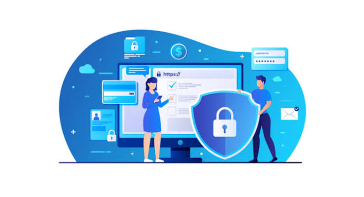

Las buenas prácticas de ciberseguridad para el usuario constituyen el conjunto de hábitos diarios y configuraciones esenciales que protegen la información personal y los dispositivos contra los ataques digitales. En primer lugar, es fundamental utilizar contraseñas robustas, largas y únicas para cada servicio, evitando reutilizar claves y apoyándose en un gestor de contraseñas para su almacenamiento seguro. Asimismo, se debe activar la autenticación de dos factores (2FA) en todas las cuentas disponibles, priorizando el uso de aplicaciones de autenticación o llaves físicas sobre los mensajes de texto SMS. En el ámbito de la navegación, el usuario debe adoptar una postura de desconfianza activa ante correos electrónicos, mensajes de texto o llamadas sospechosas, evitando hacer clic en enlaces o descargar archivos adjuntos de remitentes desconocidos para mitigar el riesgo de phishing. Por otra parte, es indispensable mantener el sistema operativo, las aplicaciones y el software antivirus completamente actualizados con los últimos parches de seguridad, ya que esto corrige las vulnerabilidades que los atacantes suelen explotar. Finalmente, se recomienda realizar respaldos o copias de seguridad periódicas de la información crítica en discos externos o servicios de almacenamiento en la nube cifrados, y evitar estrictamente el uso de redes Wi-Fi públicas para realizar transacciones bancarias o acceder a cuentas corporativas sin la protección de una red privada virtual (VPN).